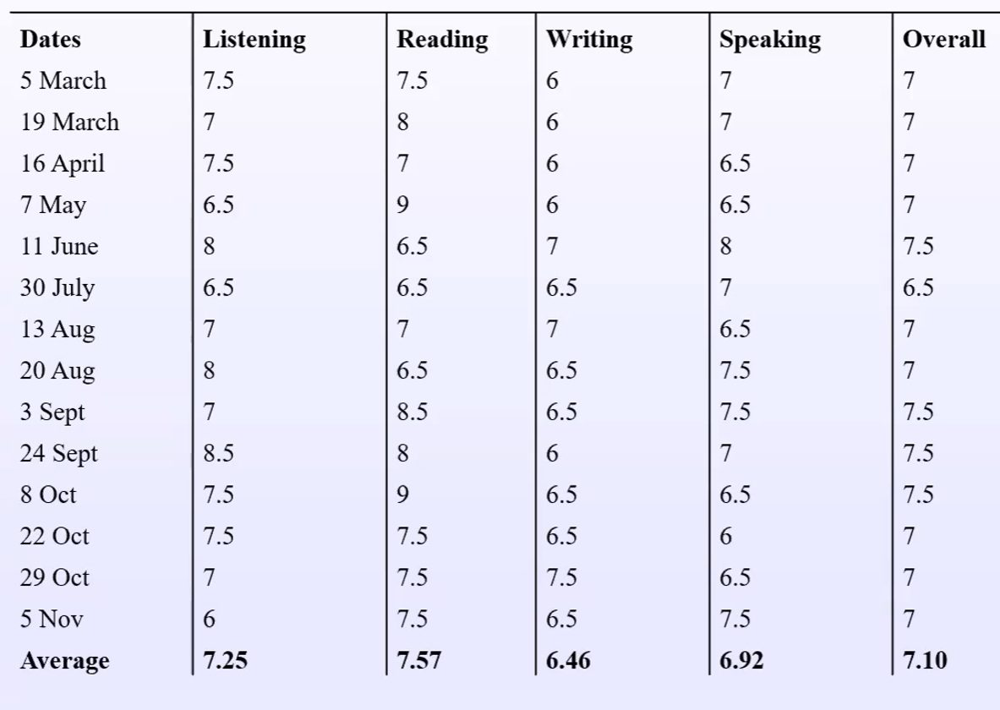

Abstract
High-stakes language tests decide who can study, work and migrate. This essay examines the ethics of accountability, validity and fairness in language testing - and the real-life consequences for test-takers forced to retake tests such as IELTS over and over.
Second language testing and assessments create opportunities for people to pursue their dreams for education and migration purposes, which has been impelling change in Language Education Policies over time (Shohamy, 2006). Even though this topic has been in the public eye for decades, the changes in policies have been extremely slow, while the popularity and desire for people to study or work in Australia, the UK, Canada, and the USA continues to grow. However, due to outdated regulations and policies, test-takers are forced to take the IELTS (International English Language Testing System) test to prove their language abilities and proficiency, as it is the most recognised type of language testing in the world (Study Australia, n.d.). From a policy point of view, these test results have the power to divide people into different social groups. The ones who do succeed in passing tests with a high score can get into universities, or retain a visa in the country of preference, whereas the ones who do not reach the desired test scores suffer detrimental consequences (e.g., returning to their home countries or not being able to graduate). This represents the power dynamic that the institutions who provide the tests hold over test-takers. Language Educational Policies are powerful tools which have an immense impact on the way that language is used and affected by all communities in society. The tests provided by testing institutions contain standardised language, this type of universal standardisation of tests does not resemble real-life language. Since language itself is adaptable and changes over time, it is not fixed nor spoken, or expressed in the same way by individuals (Shohamy, 2006).
This essay will outline the ethical implications of accountability, validity, and fairness in language testing and assessment in policy considerations. Furthermore, it will outline how these implications have an impact on test-takers and provide some possible solutions to these implications in second language testing and assessment.
Accountability is paramount in ethical testing practices and needs to be justified when designing tests and measuring the test results (McNamara, 2008). The majority of people who tend to take institutional tests (e.g., IELTS) view the accountability of these tests negatively when they fail as the test does not measure their communicative abilities. Instead, the tests measure standardised language abilities which follow a standard rubric and standard guidelines, which do not consider the individual and their past or present experiences with these tests. IELTS and other language testing authorities have to have a set measuring criteria which follow the rules and regulations of how these scoring rubrics are considered reliable, valid, and fair. The factors which are considered in a scoring rubric are as follows: clarity of the criteria, relevance to the task, appropriateness for the audience, balance of criteria, degree of specificity, clarity descriptors, and consistency of application (Weigle, 2002). These factors are made transparent by the providers to give test-takers a fair chance to practice and provide them with information about what is expected of them to pass the test (Practice Test Geeks, 2023). The website shows a clear format and instructions on how to pass the test with examples of the test items and sample tests as it is expected to make the test accountable for test-takers (McNamara, 2000). These testing entities have a measuring system in order to pass or fail test-takers, which is a very hard model to follow on a global scale.
However, this creates other issues, as it divides people into categories of those who are good at taking tests and can pass tests, and those who are not good at taking tests in general. Good tests are considered to be the ones which have positive results in interactional learning environments where there is a clear alignment between learning, teaching, and testing, also known as washback (Hamp-Lyons, 1997). In some cases, authorities are responsible for curriculum reform and in other cases, the language institutions put forward their own curricula and create their own testing resources continuing standardisation ideologies (Hamp-Lyons, 1997). This does not imply that the standardised tests have positive washback, as positive washback measures someone’s communicative achievements in more progressive fashions (McNamara, 2000). However, using tests which are believed to have positive washback does not always have positive outcomes for test-takers beyond the classroom. The IELTS test, for example, is an approved form of testing by the International Language Testing Organisation (ILTA), this guarantees accountability as it is an entity which is driven by ethical policies (Hamid, 2016). The IELTS test measures the proficiency of test-takers based on their reading, writing, listening, and speaking abilities. However, in the past, test-takers had to pass all four skills test in one sitting, and IELTS forced test-takers to resit the whole test until they would pass all the skills with the grade needed for their educational or migration purposes.

Hamid (2016) gives an example of how the way these testing measures forced the test-taker to resit the IELTS test 14 times. The table above provides the IELTS test results of a test-taker who needed a score of 7 for all skills. Unfortunately, this person sat the test 14 times and still was not able to pass the test. Here, it becomes evident that the way the test is used to measure language abilities and proficiency is unreliable. The first four times the person in question who sat this test passed the reading test and could not pass the writing and speaking component (see figure 1). However, the fifth time, the test-taker passed all skills tests except for the reading part. This caused the test-taker to continue to take the test over and over again without any success, demotivating and devaluing the person in the process (Hamid, 2016). Added to this, given their inability to receive constructive feedback on test results, it becomes nearly impossible for someone to improve their mistakes to prevent them from making the same errors the next time. This goes against the codes of professional ethics as the reliability, validity, and fairness of the test become questionable towards the test-takers and the developers.
The outcomes of these tests have negative results on that of the individual as illustrated by Hamid and Hoang (2018) where the person in question had been living in Australia for eight years and was sent back to their home country due to failing the IELTS test and not being granted a visa renewal. These extreme test requirements do not consider the anxiety and other psychological impacts on test-takers. These practices go against the fairness a test should offer by measuring the test-takers’ real-life situations and communicative abilities as the course and test should offer (Hamid, 2016).
The examples above are from two different people trying to pass the exam for visa purposes to stay in Australia. However, Hamid et al. (2019), illustrate the examination purposes in terms of gatekeeping who enters Australia, when, and for how long. This is impacted by the fact that, IELTS tests have an expiration date giving them a period of score validity. This adds pressure to renewing the test score every two years when test-takers have to retake the test to demonstrate the same language abilities, reliving the same issues which can contribute to mental health issues. Hamid et al. (2019), present six case studies of different test-takers in different situations, illustrating that language policy determines language standards and maintains its power of uniformity (Shohamy, 2006).
Here are four out of the six cases illustrated in Hamid et al. (2019):
Case 1: a PhD student who was offered a scholarship after completing her Master’s program in Australia, had to retake her IELTS test as the student had three months left on the test score validity. The student had struggles with finances and had been residing in Australia and studying at a high-ranking university in the two-year period of the test score validity. She was forced to resit the test because, according to the authorities, her language would have declined and become unacceptable in three months. This shows that the authorities are retaining their uniformity and do not look at the individual and their actual communicative abilities.
Case 3: a postgraduate student who had three weeks left on her test result and needed a new test for her admission into her MBA course. However, the course provider suggested an alternative test, which the student passed. The test-taker showed gratitude and this highlights the importance of humanising tests by looking at the individual rather than a name on a piece of paper (Hamid & Hoang, 2017). This case shows the responsibility that educators have taken upon themselves and tested the individual according to their standards rather than that of a universally standardised institution.
Case 4: is that of a native English speaker with British citizenship who had to take the IELTS test in order to work in Australia. This test-taker was not able to pass the writing test over 6.5 and asked for feedback from the authorities as English is their first language. The feedback was not constructive but rather generic. This makes the test far less reliable when a native speaker cannot pass the test. This raises questions of how and why this is even possible. If a native speaker cannot pass the test, how are non-native English speakers who are taking the test meant to pass it? This is solid proof in this case, that the test did not measure the communicative language abilities of the test-taker.
Case 5: a Dutch Academic who applied for his work visa renewal had to retake the IELTS test despite his work within academia in Australia. This shows the exclusion of people who are working and living in Australia, contributing socio-economically. The test-taker pointed out that he would have to take the test again in the future due to the expiration of its validity period of two years. The authorities’ argument was that the level of English would decline over time which is why IELTS has such high standards. However, this does not validate nor represent the truth when people who are immersed in Australian society while working and contributing to the country, their English would actually improve over time.
These examples go against the notion of test use as it should not only be a measure of proficiency, as it has clear consequences for teachers and test-takers. Intended consequences in test use are usually to motivate and improve language use rather than just to measure proficiency, however, the reality in these cases shows clear unintended consequences where the test providers are assessing for specific outcomes without making changes to the way they examine individuals. The justifications from the providers as mentioned in the examples have made the assessments accountable to the testing authorities without considering test-takers as key stakeholders, making the intended use of the assessment unjustifiable (Bachman & Palmer, 2010).
The course and tests taken by the learners have significant elements of unfairness as they play a political role (McNamara, 2000). Practices surrounding language courses and tests are intended to benefit those in power and intended to maintain uniformity in tests justifying fairness from their perspective to keep standards universal. This results in test-takers failing and then having to retake the test. However, fairness should go both ways, to the test-taker and the authorities, to create an inclusive and overall sense of belonging for those who leave their home countries to come and enhance the Australian economy whether that is in educational studies or for work purposes. IELTS is the first test provider amongst many who have announced allowing IELTS branches to provide for the retaking of singular skills tests by the end of 2023 (IELTS One Skill Retake ,n.d.). This is a step forward in educational justice in second language testing and assessment policies. However, the IELTS’ feedback criteria and proficiency measures remain the same. Additionally, the fees of the one-skill retake are AUD$259 per skill whereas the whole test costs AUD$410, putting an economic strain on test-takers.
Teachers as test designers are accountable when designing a test as it has an impact on the learners as mentioned in the previous sections. From my educational experience, I work for TAFE (Technical and Further Education) Queensland which is a government-funded education institution, which provides many vocational courses and training opportunities (Reiners, 2023). The ELICOS (English-language courses) department at TAFE Queensland allows test-takers to pass four out of 12 formative assessments for learning (AfL), these happen weekly to test students’ learning process (Saville, 2013). This allows the learners and teachers to detect any learning difficulties and improve weaknesses in preparation for the summative assessments, which are assessments of learning (AoL) (Saville, 2013). The focus of AoL is to test how much the students have learned overall at the end of a term as these allow students to move from one level to the next (e.g., First Certificate in English to Cambridge Advanced). Students are allowed to opt for a 12-week IELTS, Cambridge English, or English for Academic Purposes (EAP) course after completing Upper Intermediate in General English Classes (TAFE Courses, n.d.). Once entering one of the above-mentioned academic courses, learners are assessed weekly in AfL format, and twice in AoL format. Both forms of testing combined are twelve tests in total. To enter the pathway of their choice at TAFE they have to pass four out of twelve assessments on grammar, reading, writing, listening, and speaking skills. The teachers are then responsible to pass the students with a 5.5 mark or above to allow learners to enter the pathway of their choice. In order to make this type of testing accountable, valid, and fair process, teachers look at the overall test scores in the 12-week course per skill, not per assessment. Additionally, students are provided feedback on all of their assessments, and teachers are meant to look at the overall communicative abilities of the students and see the individual rather than ‘just another test-taker’. This type of testing not only makes the learners feel included, but the teachers feel they have a choice in passing the learner on their communicative abilities overall, changing the power dynamics reinforced by other language institutions. If this type of testing and assessment spreads to other educational providers, all testing authorities would potentially be forced to adjust their standards and consider the needs of the individual. However, I also have students who want to study at an Australian university, who have to pass the IELTS test. These students try taking the test throughout their 12-week course. Learners come back after failing the test wanting feedback from their teachers, questioning their teachers as they did pass the tests with a score of 7 given in class, causing issues between teachers and students.
This essay has argued the ways in which ethical considerations are constructed is narrow with strict universal standard of language assessments, test scores, and validity for test-takers, which has an impact on individuals in society. It shows how educators, policymakers, and language institutions are responsible for critically examining and improving language testing and assessment practices to avoid test bias and unfair expectations from test-takers. Testing is currently an inflexible “one size fits all” solution and this, by the nature of the “one size fits all” bell-curve distribution works for some, but by design will penalise others. There are gaps in the way accountability, validity, and fairness are presented in the literature compared to what is happening in real-life situations of test-takers. Accountability goes beyond what is standard and educators need to consider their learners in the way they are choosing to design tests, create assessments, and change their curricula which are ethical and accountable for the individuals that are being tested. This essay posits a path for second language testing and assessment in creating a more inclusive environment where educators are standing with, their learners, and challenging the status quo in testing standards to reinforce change in test scores and their impact on test-takers.
Bachman, L. F., & Palmer, A. S. (2010). Language assessment in practice: Developing language assessment and justifying their use in the real world. Oxford, New York: OUP.
Fulcher, G., & Davidson, F. (2007). Language testing and assessment: An advanced resource book. London: Routledge.
Hamid, M. O., Zhu, L., & Baldauf, R. B. (2014). Norms and varieties of English and TESOL teacher agency. The Australian Journal of Teacher Education, 39(10), 77–95. https://doi.org/10.14221/ajte.2014v39n10.6
Hamid, M. O., Hoang, N. T. H., & Kirkpatrick, A. (2019). Language tests, linguistic gatekeeping and global mobility. Current Issues in Language Planning, 20(3), 226–244. https://doi.org/10.1080/14664208.2018.1495371
Hamid, M. O., & Hoang, N. T. H. (2018). Humanising language testing. TESL-EJ (Berkeley, Calif.), 22(1), 1.
Hamid, M. O. (2016). Policies of global English tests: test-takers' perspectives on the IELTS retake policy. Discourse (Abingdon, England), 37(3), 472–487. https://doi.org/10.1080/01596306.2015.1061978
Hamp-Lyons, L. (1997). Washback, impact and validity: Ethical concerns. Language Testing, 14(3), 294-303.
IELTS One Skill Retake. (n.d.). https://www.ielts.org/for-test-takers/ielts-one-skill-retake
McNamara, T. (2008). The socio-political and power dimensions of tests. In E. Shohamy and N. H. Hornberger (eds.), Encyclopedia of language, culture and education, 2nd Edition, Volume 7: Language Testing and Assessment, 415-427.
McNamara, T. (1998). Policy and Social Considerations in Language Assessment. Annual Review of Applied Linguistics, 18(1998), 304–319. https://doi.org/10.1017/S0267190500003603
Practice Test Geeks. (2023, March 28). International English Language Testing System Preparation - Practice Test Geeks. https://ielts-tests.practicetestgeeks.com/ielts-practice-testexam/?msclkid=fd7b1baa879a1d8b5d3d7fd82c1c9209&utm_source=bing&utm_medium=cpc&utm_campaign=IELTS&utm_term=pass%20ielts&utm_content=IELTS
Reiners, C. (2023, May 21). What is TAFE (Technical and Further Education) and How Can It Benefit You? TAFE Courses Australia. https://www.tafecourses.com.au/resources/what-is-tafe/
Shohamy, E. (2006). Language Policy. Routledge. https://doi.org/10.4324/9780203387962
Study Australia. (n.d.). Language testing organisations. https://www.studyaustralia.gov.au/english/study/english-courses/language-testing
TAFE Courses. (n.d.). go.tafeqld.edu.au. https://go.tafeqld.edu.au/rs/089-PUR-531/images/102_2019_TAFE%20Queensland%20ELICOS%20Classes_FactSheet_SB_N_SP.pdf
Weigle, S. C. (2002). Assessing writing. Cambridge, England: Cambridge University Press.